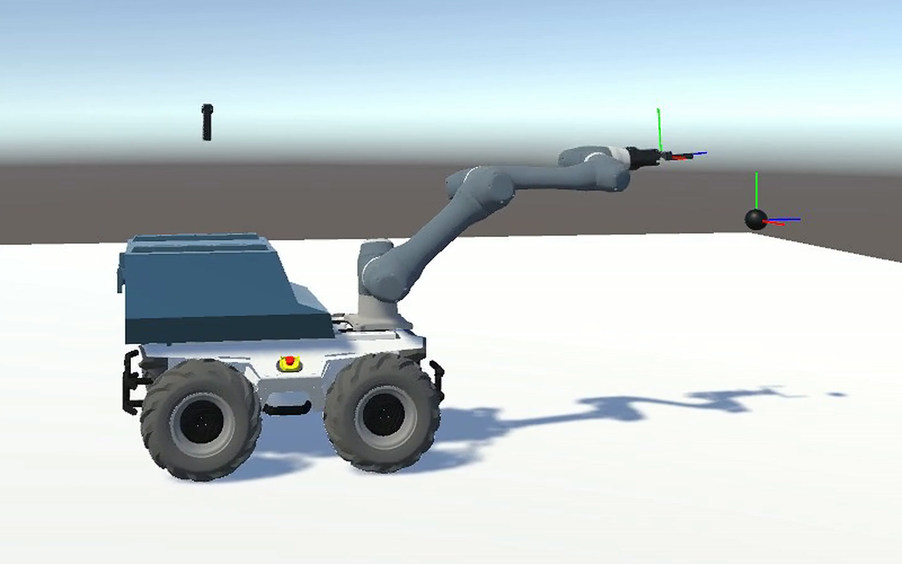
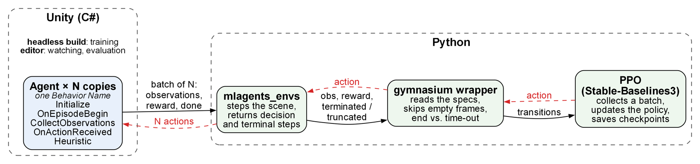
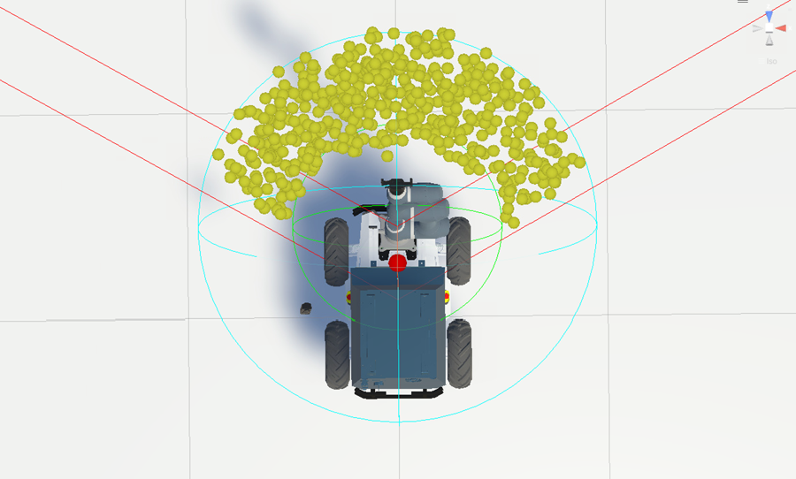
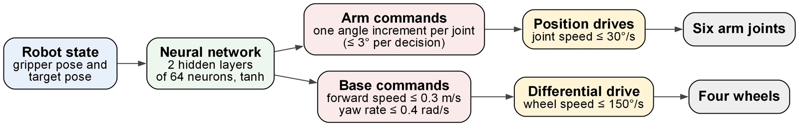
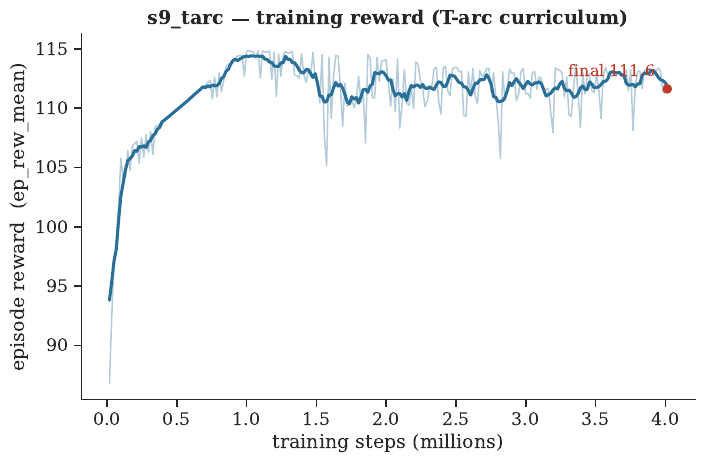
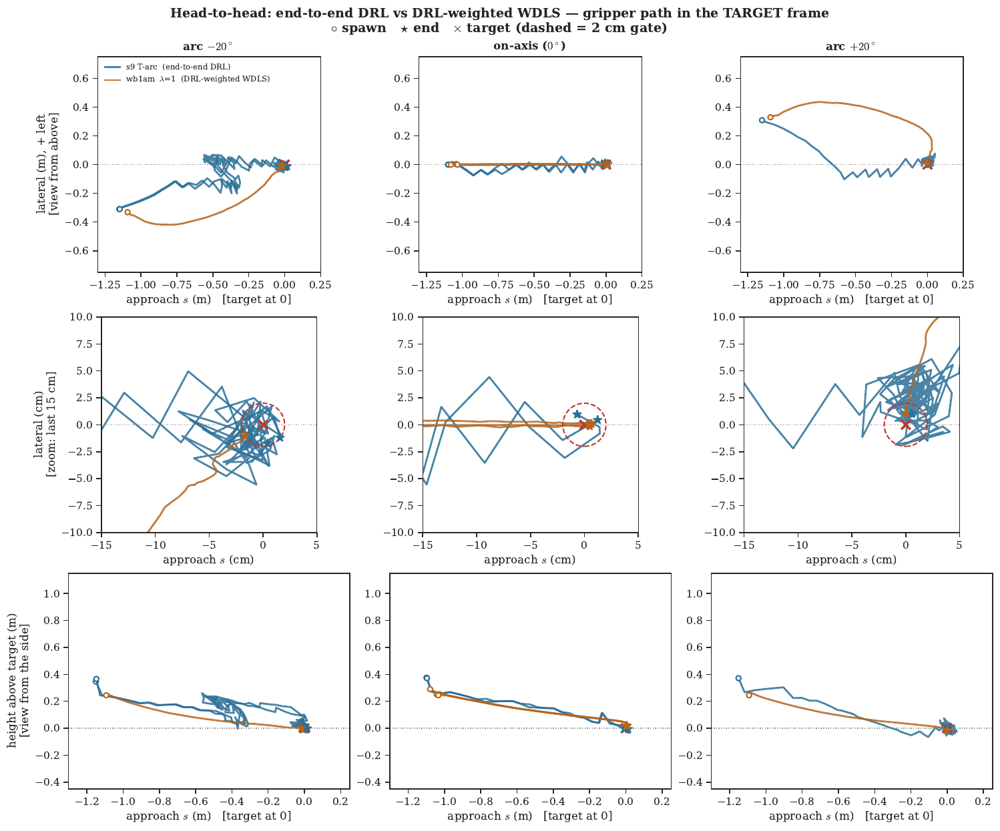

ProjectSIMULATION
Whole-body control of a mobile manipulator with deep reinforcement learning
Should a learned policy drive the robot itself, or only tune a model-based controller? I built and trained both answers for the same robot and the same task, then compared them under one protocol.
- Context
- Research internship, CIAD lab (UTBM)
- Dates
- May – Sept 2026
- Robot
- AgileX Scout 2.0 + Doosan A0509
- Stack
- Unity ML-Agents, C#, SB3 (PPO)

01The problem
A mobile manipulator is redundant: the base and the arm can both move the gripper, so the same target can be reached in many ways. Here the target sits 2 m away while the arm reaches about 0.9 m, so the base has to drive and the arm has to finish the job, together.
Two ways to use learning for this:
- End-to-end: the policy outputs the motion directly, i.e. all 8 velocities (2 for the base, 6 for the arm).
- Hybrid: a model-based controller (PBVS + Weighted Damped Least Squares) computes the motion from the robot's kinematic model, and the policy only outputs its 8 weights, deciding how much the base and each joint should move.
02Simulation and training setup
I built the robot in Unity from its URDF and manuals, with articulation-body physics. Training runs in headless Unity builds that hold several robots in one scene (16 for the arm-only stages, 8 for the whole body), connected to Stable-Baselines3 through a Gymnasium wrapper.

The end-to-end model was built in stages, each warm-started from the previous one:
03Step 1: drive the base
The first policy only drives the Scout. From 4 observations it outputs 2 commands, forward speed and yaw rate, and brings the base close to the target. It reached the 0.6 m gate in all 11 evaluation episodes.
04Step 2: reach with the arm
Then the arm alone, with the base standing still. The policy moves the six joints of the Doosan arm to bring the gripper onto the target in position and orientation, until the gripper frame and the target frame sit on top of each other. A five-stage curriculum gradually widened the area where targets could appear.

05Step 3: the whole body, end-to-end
Finally both together. One policy outputs all 8 velocities, 2 for the base and 6 for the arm: the base covers the long distance and the arm does the final alignment. It reaches the target in 8.3 s on average, within 2 cm and 1.15°.


06The hybrid: a model-based controller tuned by RL
The second answer leaves the motion to a model-based controller. PBVS (position-based visual servoing) computes the gripper velocity that closes the pose error, and WDLS (weighted damped least squares) uses the robot's kinematic model, its Jacobian, to turn that velocity into base and joint speeds. The weights decide how the work is shared between the base and each joint, and that is the only thing the policy learns.
Credit: the PBVS + WDLS controller was provided by the CIAD lab; it was developed by another intern, not by me. My part was porting it into Unity and training the policy that tunes its weights.
- Ported the controller from C++ / ROS into Unity (C#, Math.NET Numerics), so it runs inside the training loop.
- The policy outputs the eight WDLS weights; the model-based solve turns them into joint and base velocities.
- A curriculum progressively widened the range of weights the policy was allowed to use.
07Results
Protocol: 3 targets 2 m away (on-axis, arc −20°, arc +20°), 5 passes each, deterministic policy,
gate d < 2 cm and φ < 1.15°. Both controllers passed every run.
| metric | end-to-end | hybrid |
|---|---|---|
| time to the gate | 8.3 s | 37.0 s |
| min position error | 13.2 mm | 19.1 mm |
| min orientation error | 0.39° | 0.21° |
| path length / straight line | 3.28 | 1.09 |
| near-goal direction reversals | 28.6 | 6.8 |
| backtracking | 31% | 0% |

Answer: producing the motion is over four times faster and the most accurate in position, but less regular and without an analytic guarantee. Producing the weights keeps a near-straight path and that guarantee, but is still slow.
08What I learned
- Silent errors are the expensive ones. A value set in the Unity Inspector overrides the C# default and is frozen into the headless build, so a run can train old code without any error. My launchers check that the build is newer than the sources.
- Mathematics first. Writing an operation mathematically (quaternions, frame changes) before looking for the Unity function, or implementing it when none existed.
- Run discipline. 71 training launchers and 73 model directories: every run documented so results stay comparable.
09Next steps
- Imitation learning from the analytic solve (behaviour cloning, then a short PPO fine-tune).
- A wider weight range, since the learned weights all stay low, which is what makes the hybrid slow.
- The real robot, with an Insta360 camera in place of Unity's ground truth.